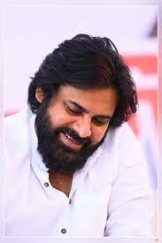

Sep 2nd, 1973
"To live greatly, To risk greatly."
Pawan Kalyan is an Indian actor, politician, filmmaker, martial artist, and philanthropist who primarily works in Telugu cinema. Known for his unique acting style and mannerisms, he has a large fan base and a cult following.